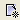 Click on the New icon to create a new character
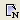 Click on the New NPC icon to open the NPC generator to create a new random character
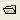 To open a file from a folder select the Folder icon
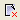 Close the current character
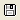 Save the current character
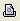 Preview the current character in a browser
Print the current character
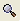 Create/Select filters for selected tab
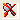 Remove selected filters for selected tab
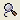 Customize the list of available filters
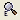 Create your own custom compound filters
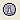 Add Kits to your character
 Open up the Settings-->Preferences dialog
Open up the Settings-->Preferences dialog
Open GMGen, the game master aid
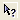 Help on current selection